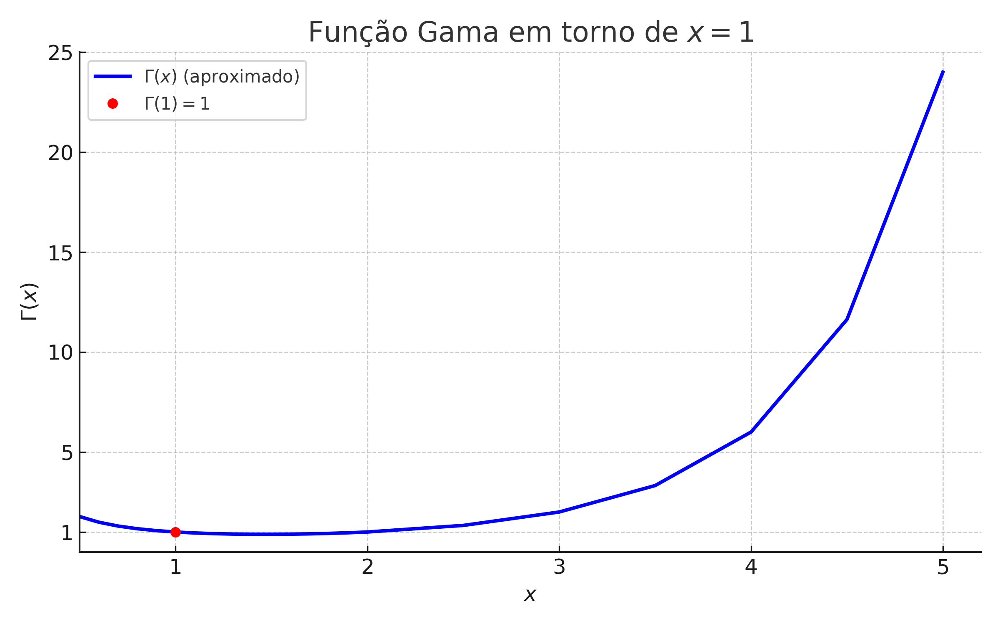

📘 🧮 Por que 0! = 1?
↠Voltar para o Guia de Leitura de Matemática 🧠🧮
↠Voltar para a Seção de Matemática 🧮

1 📘 🧮 Por que 0! = 1?
Nesta publicação exploramos 10 justificativas distintas para o valor de \(0!\). Cada seção abaixo foi adaptada de uma apresentação original em LaTeX Beamer e mantém o espÃrito didático com fórmulas matemáticas e exemplos.
1.1 🧠Forma 1: Interpretação Combinatória
O fatorial \(n!\) representa o número de maneiras de organizar \(n\) elementos distintos.
- Para \(n = 3\): \(3! = 6\) permutações
- Para \(n = 2\): \(2! = 2\) permutações
- Para \(n = 1\): \(1! = 1\) permutação
- Para \(n = 0\): Quantas permutações do conjunto vazio?
Resposta: \[ \boxed{1 \text{ permutação (o conjunto vazio em si)}} \] \[ \Rightarrow \boxed{0! = 1} \]
1.1.1 🌳 Ilustração: Interpretação Combinatória
O fatorial \(n!\) representa o número de permutações de \(n\) elementos.
Exemplo: permutações de \(\{a, b\}\)
\[ \begin{aligned} 2! &= 2: \{a,b\}, \{b,a\} \\\\ 1! &= 1: \{a\} \\\\ 0! &= 1: \{\,\} \text{ (conjunto vazio)} \end{aligned} \]
Representação visual das permutações
Conclusão: Há exatamente \(\boxed{1}\) forma de organizar zero elementos.
\[ \boxed{0! = 1} \]
1.2 🔠Forma 2: Definição Recursiva
A função fatorial é definida recursivamente:
\[ n! = n \cdot (n - 1)!, \quad \text{com } 1! = 1 \]
Aplicando a definição para \(n = 1\):
\[ 1! = 1 \cdot 0! \Rightarrow 1 = 1 \cdot 0! \Rightarrow \boxed{0! = 1} \]
Essa definição é essencial para que a função fatorial seja válida a partir de \(n = 1\) em diante.
1.2.1 🌳 Ilustração: Definição Recursiva
- \(3! = 3 \cdot 2!\)
- \(2! = 2 \cdot 1!\)
- \(1! = 1 \cdot 0! \Rightarrow 0! = 1\)
\(\boxed{0! = 1}\) é necessário para que a recursão “termine†corretamente.
1.3 🔢 Forma 3: Coeficiente Binomial
Usamos a fórmula do coeficiente binomial:
\[ \binom{n}{k} = \frac{n!}{k!(n-k)!} \]
Caso especial:
\[ \binom{0}{0} = \frac{0!}{0! \cdot 0!} \Rightarrow 1 = \frac{0!}{(0!)^2} \Rightarrow (0!)^2 = 0! \] \[ \Rightarrow \boxed{0! = 1} \]
Isso garante que as fórmulas da análise combinatória continuem válidas para \(n = 0\).
1.3.1 🧩 Ilustração: Coeficiente Binomial

Há exatamente uma maneira de escolher 0 elementos do conjunto vazio.
1.4 🧬 Forma 4: Função Gama
A função gama é uma generalização do fatorial para números reais e complexos:
\[ \Gamma(n) = \int_0^{\infty} x^{n-1} e^{-x} \, dx, \quad \text{para } n > 0 \]
Ela satisfaz a relação:
\[ \Gamma(n+1) = n! \quad \text{quando } n \in \mathbb{N} \]
Portanto:
\[ 0! = \Gamma(1) = \int_0^{\infty} e^{-x} \, dx = \left[ -e^{-x} \right]_0^{\infty} = \] \[ = 0 - (-1) = 1 \]
Assim, a definição de \(0! = 1\) é coerente com a função gama.
1.4.1 🧠Demonstração de \(\Gamma(n+1) = n!\)
1. Definição da função gama:
\[ \Gamma(x) = \int_0^{\infty} t^{x-1} e^{-t} \, dt \]
2. Propriedade fundamental:
\[ \Gamma(x+1) = x \cdot \Gamma(x) \]
3. Base da indução:
\(\Gamma(1) = \int_0^{\infty} e^{-t} \, dt = 1 = 0!\)
4. Passo indutivo:
Suponha que \(\Gamma(k+1) = k!\). Então:
\[ \Gamma(k+2) = (k+1) \cdot \Gamma(k+1) = \] \[ = (k+1) \cdot k! = (k+1)! \]
Conclusão:
\[ \boxed{\Gamma(n+1) = n! \quad \text{para todo } n \in \mathbb{N}} \]
1.4.2 📠Prova da Propriedade \(\Gamma(x+1) = x \cdot \Gamma(x)\)
Objetivo: Mostrar que
\[ \Gamma(x+1) = x \cdot \Gamma(x) \]
Definição da função gama:
\[ \Gamma(x+1) = \int_0^{\infty} t^x e^{-t} \, dt \]
Fórmula da integração por partes:
\[ \int u \, dv = uv - \int v \, du \]
Aplicando integração por partes:
- Seja \(u = t^x \Rightarrow du = x t^{x-1} \, dt\)
- Seja \(dv = e^{-t} \, dt \Rightarrow v = -e^{-t}\)
Aplicando a fórmula:
\[ \Gamma(x+1) = -t^x e^{-t} \Big|_0^\infty + \int_0^{\infty} x t^{x-1} e^{-t} \, dt \]
Analisando o primeiro termo:
\[ \lim_{t \to \infty} t^x e^{-t} = 0, \quad \lim_{t \to 0^+} t^x e^{-t} = 0 \; \text{(para $x > 0$)} \]
Logo:
\[ -t^x e^{-t} \Big|_0^\infty = 0 \]
Portanto:
\[ \Gamma(x+1) = x \int_0^\infty t^{x-1} e^{-t} \, dt = x \cdot \Gamma(x) \]
Assim, a relação é válida para todo \(x > 0\).
1.4.3 🔠Justificativa dos Limites
Para aplicar a integração por partes, mostramos que:
\[ \lim_{t \to \infty} t^x e^{-t} = 0 \quad \text{e} \quad \lim_{t \to 0^+} t^x e^{-t} = 0 \quad (x > 0) \]
1. Quando \(t \to \infty\):
\[ \frac{t^x}{e^t} \to 0 \]
pois a exponencial domina qualquer potência.
Portanto:
\[ \boxed{\lim_{t \to \infty} t^x e^{-t} = 0} \]
2. Quando \(t \to 0^+\):
\[ t^x \to 0, \quad e^{-t} \to 1 \quad \Rightarrow \quad t^x e^{-t} \to 0 \cdot 1 = 0 \]
Portanto:
\[ \boxed{\lim_{t \to 0^+} t^x e^{-t} = 0} \]
Ambos os limites garantem que o termo de fronteira da integração por partes se anula.
1.4.4 📊 Visualização dos Limites com Gráficos

Comportamento da função \(t^x e^{-t}\) para \(t \to 0^+\) e \(t \to \infty\).
1.4.5 📈 Gráfico da Função Gama

O gráfico mostra que \(\Gamma(x)\) é contÃnua e satisfaz \(\Gamma(1) = 1\), logo \(0! = 1\).
1.4.6 🧮 Função Gama — Ilustração Gráfica

O gráfico destaca que \(\Gamma(1) = 1\), o que justifica que \(0! = 1\).
1.5 🧩 Forma 5: Limite da Função Gama
A função Gama estende o fatorial para além dos inteiros positivos. Podemos definir:
\[ 0! = \lim_{x \to 0^+} \Gamma(x + 1) = \Gamma(1) = 1 \]
Justificativa via continuidade da extensão analÃtica da função fatorial.
1.6 ✴️ Forma 6: Produto Vazio e Definição com Produtório
A definição geral do fatorial como produto:
\[ n! = \prod_{k=1}^{n} k \]
Aplicando essa definição para \(n = 0\):
\[ 0! = \prod_{k=1}^{0} k = 1 \]
Na álgebra, o produto sobre um conjunto vazio é igual a 1, pois 1 é o elemento neutro da multiplicação.
1.7 🔄 Forma 7: Permutação \(P(0,0)\)
A fórmula geral das permutações é:
\[ P(n, r) = \frac{n!}{(n - r)!} \]
Aplicando com \(n = 0\) e \(r = 0\):
\[ P(0, 0) = \frac{0!}{0!} = 1 \]
Para que o número de permutações de \(0\) elementos seja \(1\), é necessário que \(0! = 1\).
1.8 🔢 Forma 8: Série de Taylor de \(e^x\)
A função exponencial possui a seguinte expansão em série de Taylor:
\[ e^x = \sum_{n=0}^\infty \frac{x^n}{n!} \]
O termo constante da série é:
\[ \frac{1}{0!} \]
Sabemos que:
\[ e^0 = 1 \quad \Rightarrow \quad \frac{1}{0!} = 1 \quad \Rightarrow \boxed{0! = 1} \]
1.9 🧮 Forma 9: Logaritmo do Fatorial
Uma identidade conhecida relaciona o fatorial com logaritmos:
\[ \log(n!) = \sum_{k=1}^{n} \log(k) \]
Aplicando com ( n = 0 ):
\[ \log(0!) = \sum_{k=1}^{0} \log(k) = 0 \quad \Rightarrow \quad \boxed{0! = 1} \]
A soma vazia retorna zero, preservando a coerência da propriedade do logaritmo.
1.10 💻 Forma 10: Sistemas Computacionais
A definição \(0! = 1\) é adotada universalmente em linguagens e softwares computacionais:
Python:math.factorial(0)retorna1R:factorial(0)retorna1Julia:gamma(1)retorna1Mathematica:Factorial[0]retorna1
Todos seguem a convenção matemática padrão:
\[ \boxed{0! = 1} \]
1.11 🧠Conclusão
Cada abordagem nos leva ao mesmo resultado:
\[ \boxed{0! = 1} \]
Essa igualdade é coerente com:
- a lógica combinatória,
- a definição recursiva,
- as fórmulas algébricas dos binomiais,
- a generalização via função gama,
- a continuidade da função gama,
- a definição de produto vazio,
- a coerência com permutações \(P(n,n)\),
- a validade da série de Taylor de \(e^x\),
- a definição de logaritmo do fatorial,
- e a implementação computacional.
Uma definição bem escolhida é uma ponte entre ideias.
↠Voltar para o Guia de Leitura de Matemática 🧠🧮
↠Voltar para a Seção de Matemática 🧮
🔠Voltar ao Topo
Blog do Marcellini — Explorando a Matemática com Rigor e Beleza.
Criado por Blog do Marcellini com ❤️ e código.
2 🔗 Links Úteis
- 🧑‍🏫 Sobre o Blog
- 💻 GitHub do Projeto
- 📬 Contato por E-mail